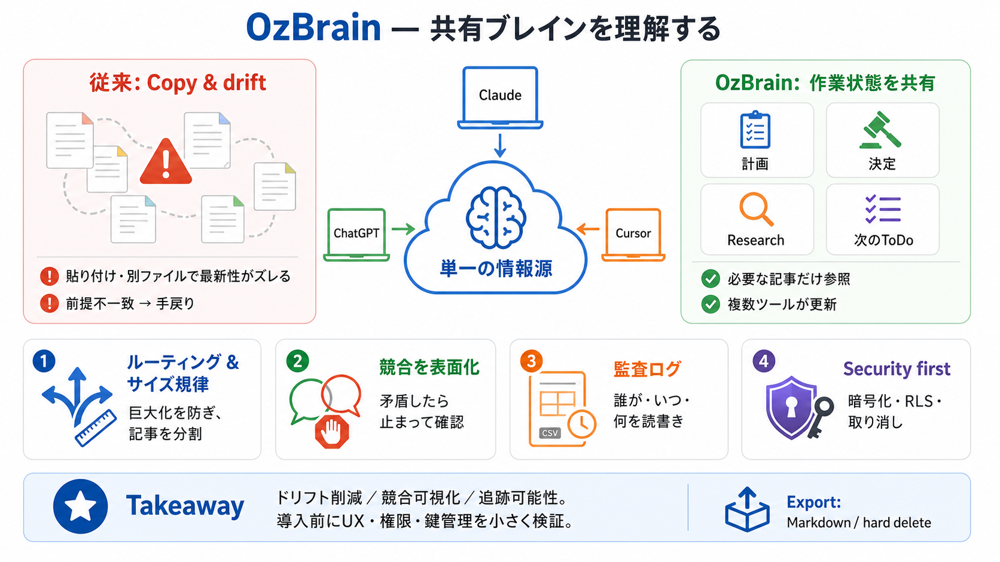

Build Your Open Brain Complete Setup Guide — Guide
1. Open Claude Desktop → Settings → Connectors 2. Click Add custom connector 3. Name: `Open Brain` 4. Remote MCP server …

複数のAIエージェント（Claude / ChatGPT / Cursorなど）が、同じ“作業中の情報”を参照・更新できるクラウド基盤です。
従来は、エージェントごとに知識や作業情報をコピー＆ペーストしたり、別ツールに散らばせたりして“最新性”が崩れます。
OzBrainは「プラットフォームのメモリ」ではなく、作業成果（計画・決定・調査・顧客情報など）を“単一の情報源”に保持します。
ブレインは無制限に詰め込むのではなく、読み取り時は必要記事へルーティングし、書き込み時はサイズ規律で制御します。
既存内容と書き込みが矛盾した場合、競合（コンフリクト）を顕在化させ、エージェントが“止まって確認”する設計が述べられています。
共同作業のために、誰がいつどの記事を読んだ／書いたかを記録する監査ログ（CSVエクスポート）が強調されています。
既存の“メモリ”はツール内キャッシュや好みになりがちで、分散すると“同じ最新情報”になりません。
暗号化保存、監査ログ、テナント分離、Row-level security（RLS）強制、Revok（取り消し）でアクセス遮断までが説明されています。
Markdownとしてエクスポート（例：brain-export.zip）、キャンセル後のハード削除の説明があり、移行可能性を意識しています。
競合時の最終決定フロー、ルーティング根拠、サイズ規律の失敗モード、権限設計や鍵管理・ログ保持期間の詳細は入力だけでは確定しません。
OzBrainは「複数エージェントが同じ作業状態を共有する」ことで、整合性・共同作業・監査可能性・サイズ制御を狙うプロダクトです。
以下はこの要約から読み切れない“検証ポイント”です（公式資料・UI・契約/セキュリティ資料で確認してください）。
1. Open Claude Desktop → Settings → Connectors 2. Click Add custom connector 3. Name: `Open Brain` 4. Remote MCP server …
# MCP connector Connect MCP servers to your agents for access to external tools and data sources. Claude Managed Agent…
| Client | Setup guide | Config path | --- | Claude Desktop | `/setup/claude-desktop` | macOS: `~/Library/Application …
This is the payoff. Once the MCP server is deployed, connecting clients is a one-liner. Claude.ai: paste the MCP server…
The MCP introduces a standard wrapper that allows an AI model to call software without needing an explicit human instruc…